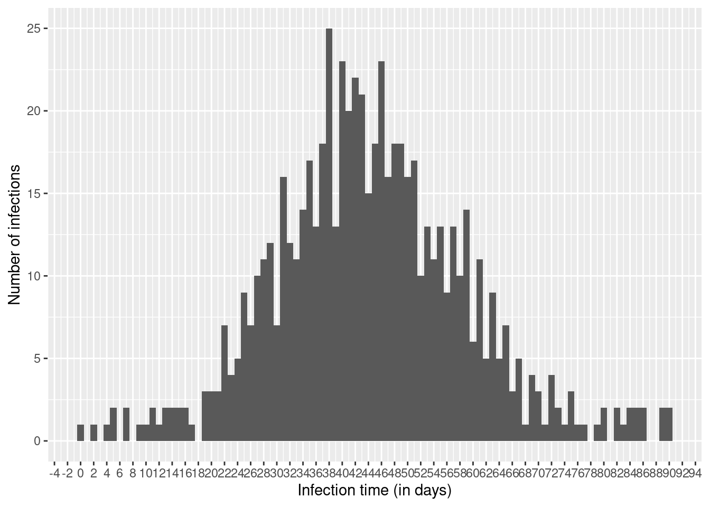
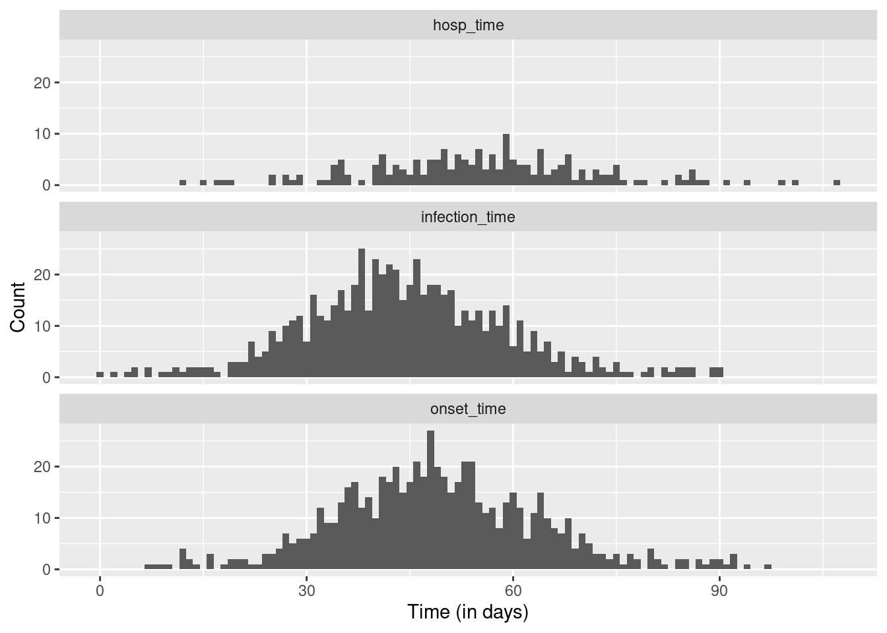
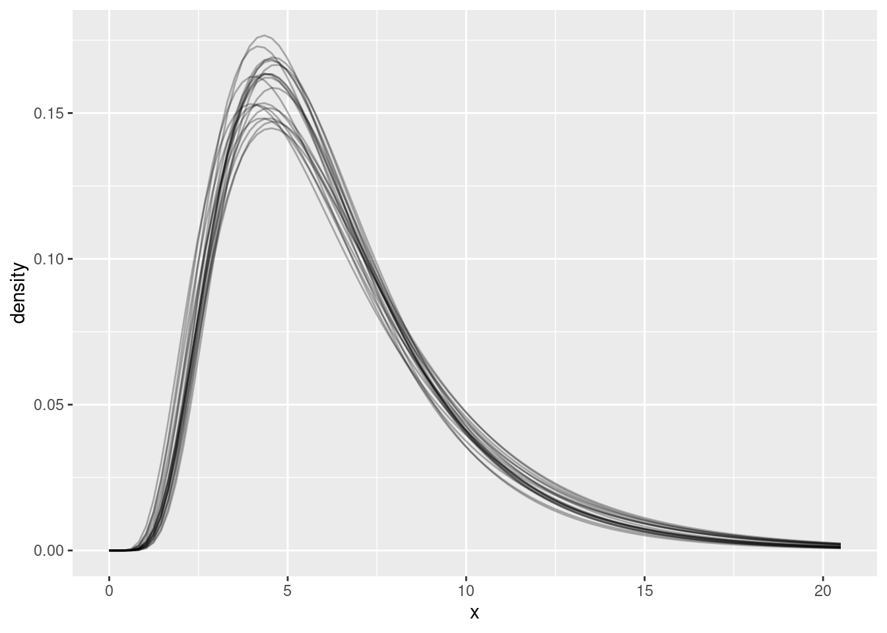

library("nfidd")
library("ggplot2")
library("dplyr")
library("tidyr")
library("lubridate")
library("here")
library("cmdstanr")
library("posterior")Delay distributions
Introduction to epidemiological delays
Objectives
The aim of this session is for you to familiarise yourself with the concept of delay distributions used to describe reporting in infectious disease epidemiology. You will do this by working in R to simulate delays in the reporting of cases in an infectious disease outbreak, before using the simulation model in stan to estimate delays from a data set of outcomes.
Libraries used
In this session we will use the nfidd package to load a data set of infection times, the ggplot2 package for plotting, the dplyr and tidyr packages to wrangle data, the lubridate package to deal with dates, the here package to find the stan models, the cmdstanr package for using stan, and the posterior packages for investigating the results of the inference conducted with stan.
Tip
The code in this session can be run as an interactive notebook using RStudio, or copied-and-pasted into an R session. It needs to be run inside the course repository so that the here() commands below find the stan model files.
Simulating delayed epidemiological data
We will start this session by working with a simulated data set of infections from a disease that has caused an outbreak which subsequently ended. In our example outbreak, there were 649 infections. The outbreak lasted around 90 days after the first infection, with new infections peaking roughly around day 40.
Note
For now we will not concern ourselves with the model used to generate the epidemic. This represents a typical situation in the real world, where we may have a model of how an infection has spread, but we don’t know necessary know how well this corresponds to what really happened.
We will later deal with modelling the infectious process. For now, we will focus on modelling how infections get reported in data - the observation process. Using infectious disease data for analysis comes with three common challenges:
- We don’t normally observe infections directly, but their outcomes as symptomatic cases, hospitalisations or other realisations.
- These observations are incomplete (e.g. not every infection leads to hospitalisation, and so focusing on hospitalisations will leave infections unobserved)
- These observations happen with a delay after the infection occurs (e.g. from infection to symptoms).
We will work with a data set that is included in the nfidd R package that you installed initially. The column infection_time is a linelist of infections from our example outbreak, given as a decimal number of days that have passed since the initial infection of the outbreak. It can be loaded with the data command.
data(infection_times)
head(infection_times) infection_time
1 0.000000
2 2.236708
3 4.091861
4 7.347199
5 8.990060
6 4.635069### visualise the infection curve
ggplot(infection_times, aes(x = infection_time)) +
geom_histogram(binwidth = 1) +
scale_x_continuous(n.breaks = 45) +
xlab("Infection time (in days)") +
ylab("Number of infections")
Note
In reality, data from an outbreak will usually be given as dates, not decimals; and those will usually not represent infection, but an observed outcome such as symptom onset or hospital admission. For now we don’t want to spend too much time manipulating dates in R, but we will get back to working with more realistic outbreak data later.
We would now like to simulate hospitalisations arising from this outbreak. We will make the following assumptions about the process from infection to hospital admission:
Infection to symptoms:
We’ll assume all infections cause symptoms.
Time from infection to symptom onset (incubation period): We assume that the incubation period is gamma-distributed with shape 5 and rate 1, i.e. a mean of 5 days.
Symptoms to hospital admission:
We’ll assume that 30% of symptomatic cases become hospitalised.
Time from symptom onset to hospital admission: We assume that the onset-to-hospitalisation period is lognormally distributed, with meanlog 1.75 and sdlog 0.5, corresponding to a mean delay of about a week.
Take 10 minutes
Try to add onset and hospitalisation times (in decimal number of days after the first infection) to the infection data.
Hints
Create two new columns in the data:
onset_timeandhosp_time. Each column should add the new time (onset or admission) to the previous time (infection or onset), using random values from the correct probability distribution. Use thergammaandrlnormfunctions we used in the last session.Cases that don’t become hospitalised should have missing (
NA) values for the admission time. This is a binary (1/0) outcome, so try drawing from the binomial distribution with therbinomfunction to create a random distribution of missing values in your column of admission times.
Solution
# Load data
data(infection_times)
### first, choose random delays
df <- infection_times |>
mutate(
onset_time = infection_time + rgamma(n(), shape = 5, rate = 1),
hosp_time = onset_time + rlnorm(n(), meanlog = 1.75, sdlog = 0.5)
)
### next, set 70% of the hospitalization dates to NA because only 30∞ of cases
### are hospitalized
df <- df |>
mutate(
hosp_time = if_else(
rbinom(n = n(), size = 1, p = 0.3) == 1,
hosp_time,
NA_real_
)
)Now we can plot infections, hospitalisations and onsets. To do so we first convert our data frame to long format.
dfl <- df |>
pivot_longer(
cols = c(infection_time, onset_time, hosp_time),
names_to = "type", values_to = "time"
)
ggplot(dfl, aes(x = time)) +
geom_histogram(position = "dodge", binwidth = 1) +
facet_wrap(~ type, ncol = 1) +
xlab("Time (in days)") +
ylab("Count")Warning: Removed 461 rows containing non-finite outside the scale range
(`stat_bin()`).
Estimating delay distributions
As mentioned above, our data set of infection, onset and hospitalisation times is not the typical data set we encounter in outbreaks. In reality, we don’t have infection dates, and we also have to deal with missing data, incomplete observations, data entry errors etc.
For now, let us just assume we have a data set of symptom onset times and some hospitalisation times, and we would like to estimate how long it takes for people to become hospitalised after becoming symptomatic. This might be an important delay to know about, for example when modelling and forecasting hospitalisations, or more generally for estimating required hospital capacity.
To do this we can use the same model as in the session on delay distributions, assuming (or knowing, in this instance) that the delays follows a lognormal distribution.
mod <- cmdstan_model(here("stan", "lognormal.stan"))
Take 5 minutes
Estimate the onset-to-hospitalisation delay using the simulated data set we created above. Do you recover the parameters used for simulation?
Hints
Tip 1: First create a new column giving the time from onset to hospitalisation Tip 2: As in the last session, we can use our dataset to sample from the model posterior. Here we also need to exclude infections that didn’t result in hospitalisation (try using na.omit() around the data).
Solution
You can sample from the model’s posterior distribution by feeding it our simulated data set.
## Time from onset to hospitalisation
df_onset_to_hosp <- df |>
mutate(onset_to_hosp = hosp_time - onset_time)
## Use the data to sample from the model posterior
res <- mod$sample(
data = list(
n = nrow(na.omit(df_onset_to_hosp)),
y = na.omit(df_onset_to_hosp)$onset_to_hosp
),
refresh = 0, show_exceptions = FALSE, show_messages = FALSE
)
Reduce the amount of messages printed to the screen
As before the arguments to mod$sample() after the data argument are there to remove the amount printed to the screen (and in this document). You can safely remove them.
To see the estimates, we can use:
res$summary()# A tibble: 3 × 10
variable mean median sd mad q5 q95 rhat ess_bulk
<chr> <dbl> <dbl> <dbl> <dbl> <dbl> <dbl> <dbl> <dbl>
1 lp__ -136. -135. 0.951 0.720 -138. -135. 1.00 1974.
2 meanlog 1.75 1.75 0.0361 0.0356 1.69 1.81 1.00 3506.
3 sdlog 0.500 0.498 0.0253 0.0257 0.460 0.543 1.00 3576.
# ℹ 1 more variable: ess_tail <dbl>These estimates should look similar to what we used in the simulations. We can plot the resulting probability density functions.
## get shape and rate samples
df <- res |>
as_draws_df() |>
filter(.draw %in% sample(.draw, 20)) ## sample 20 iterations randomly
## find the value (x) that includes 99% of the cumulative density
max_x <- max(qlnorm(0.99, meanlog = df$meanlog, sdlog = df$sdlog))
## calculate density on grid of x values
x <- seq(0, max_x, length.out = 100)
df <- df |>
crossing(x = x) |> ## add grid to data frame
mutate(density = dlnorm(x, meanlog, sdlog))
## plot
ggplot(df, aes(x = x, y = density, group = .draw)) +
geom_line(alpha = 0.3)
Going further
- In this session we were in the enviable situation of knowing which distribution was used to generate the data. With real data, of course, we don’t have this information available. Try using a different distribution for inference (e.g. normal, or gamma). Do you get a good fit?